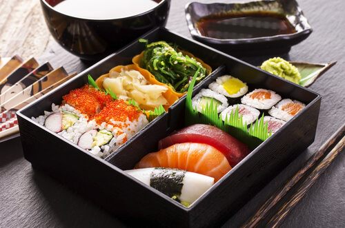

What to eat in Japan
Here are the popular japanese food.
- Sushi : rice rolls with raw fish, seafood, or vegetables. They can be eaten with soup or other things.
- Bento box: Lunch boxes often filled with sushi or other treats and snacks
- Ramen : Noodle soup that has egg, meat, vegetables and seaweed
- Tempura: crispy fried food such as fried vegetables, fish, seafood or meat
- Teriyaki: dark sticky sauce containing honey, ginger, garlic and soy sauce. This sauce is popularly served with meat or fish dishes.